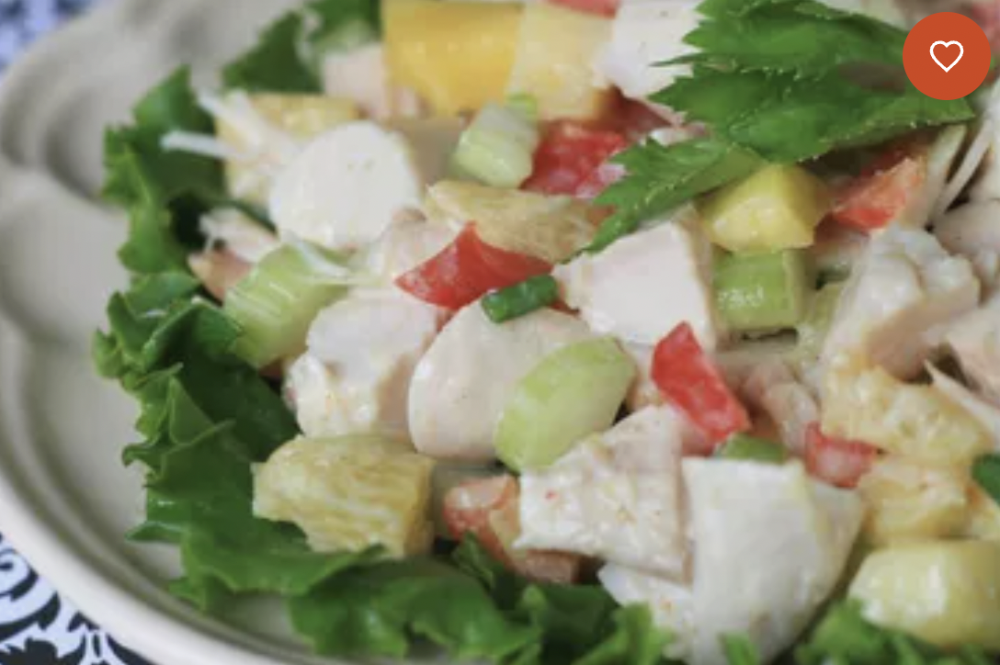

Odin Recipes

Description
A tropical twist on the Waldorf Salad! Turkey breast and pineapple are tossed with crisp celery, red bell
pepper, and green onion, finished with a creamy curried mango dressing.
Ingredients
- 1/3cup low-fat sour cream
- 2 tablespoons mango chutney
- 1 tablespoon fresh lemon juice
- 1 tablespoon fresh lemon juice
- 1 tablespoon honey
- 1/4teaspoon curry powder
- 4 cups chopped cooked turkey
Steps
-
For the dressing, blend sour cream, chutney, lemon juice, honey, and curry powder in a small bowl.
Mix well, and refrigerate until ready to use.
-
In a large bowl, combine turkey, red pepper, celery, pineapple, orange segments, and green onion. Add
dressing, and toss well to coat. Refrigerate for 1 hour before serving.
Return Home